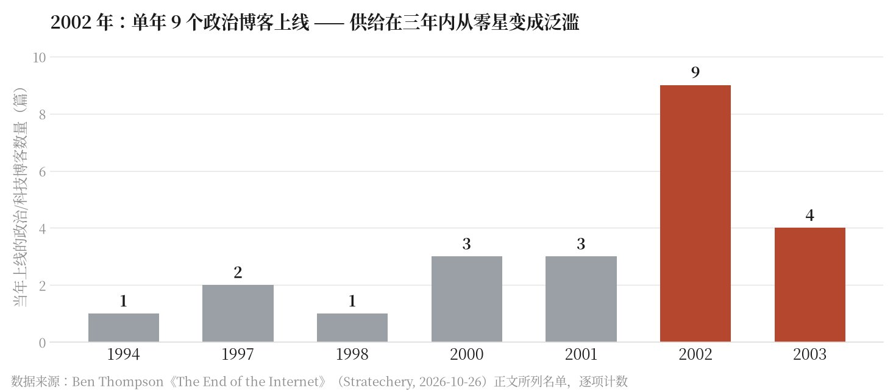
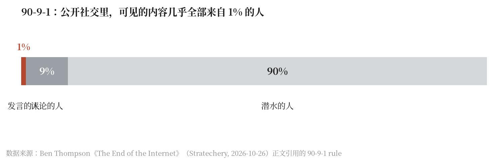

Stratechery Ben Thompson 2 张译者制图（原文无插图）
博客死了，但活下来的方式是变贵；社交媒体死了，救赎是群聊；开放互联网正在变成战场，因为 AI 让攻击的成本趋近于零。作者的结论不是怀旧，而是一套判断：想要规模化，就别做给所有人看的东西；软件也一样——为一个人、一个团队做，反而是一块全新且可能更大的市场。本地市场不是零和的，需求只在「结社」（association）的尺度上才会出现。
2003 年的夏天，就在我即将搬去台湾的前几周，我决定建一个博客，记录自己当时的经历。到那时我已经有一个 GeoCities 站点、一个 Blogspot 站点、一个用 Microsoft FrontPage 搭起来、托管在……某个地方的个人站点，所以这算是我第四次尝试做博客（最后变成 Stratechery 的是第七个）。真正让我着迷的，是一款刚发布的软件，它承诺五分钟就能装好；它叫 WordPress。
It was the summer of 2003, just weeks before I was set to move to Taiwan, that I decided to create a blog to document my journey.我得承认，装 WordPress 花的時間远远不止五分钟：我得先弄明白怎么建 MySQL 数据库、怎么配 PHP；等这些零件都摆到位之后，是的，装它确实只用了五分钟。
It did, I must confess, take me much longer than 5 minutes to install WordPress: it turned out I needed to learn how to create a MySQL database and configure PHP; once you had all of those component pieces in place, then yes, it only took 5 minutes to install!上周有消息爆出，说 PHP 的每一个版本都有一个允许在宿主机上远程执行代码的严重漏洞，我就在想那些日子。Stratechery 如今仍然跑在 WordPress 上，但这个 WordPress 是由 Automattic 旗下的 Pressable 托管的。这意味着在漏洞公开之前，我的站点就已经打好了补丁——而且我敢打赌，任何人都不该用别的方式去做这件事。想想看，二十多年前我什么都是手工搞定，完全不知道自己在干什么，而且居然也没出事，这实在有点疯狂。但这就是互联网：一个来自某个时代的疯狂发明，而那个时代，抱歉，已经永远过去了。
Stratechery today still runs on WordPress, but that WordPress is managed by Pressable, an Automattic company.2003 年大致上就是博客圈（blogosphere）真正开始的那段时间：博客当然更早就有——常被称为博客之父的 Dave Winer 在 1997 年创办了 Scripting News，此前他在一个叫 DaveNet 的个人站点上做过早期实验；Justin Hall 在 1994 年做起了 Links.net；Jorn Barger 在同样是 1997 年为 Robot Wisdom 造出了「weblog」这个词，而颇具影响力的 kottke.org 起于 1998 年——但真正让博客突然无处不在的，是 2000 年代初期，尤其在政治领域：
2003 was, roughly speaking, right around the beginning of the blogosphere.| 年份 | 原文点名的博客 | 数量 |
|---|---|---|
| 1994 | Links.net（Justin Hall） | 1 |
| 1997 | Scripting News（Dave Winer，此前有 DaveNet）、Robot Wisdom（Jorn Barger，「weblog」一词的来源） | 2 |
| 1998 | kottke.org | 1 |
| 2000 | Talking Points Memo、Andrew Sullivan、Boing Boing | 3 |
| 2001 | Instapundit、Little Green Footballs、Dooce | 3 |
| 2002 | Matt Yglesias、Daily Kos、Eschaton、The Volokh Conspiracy、Power Line、Gizmodo、Gawker、paidContent、Daring Fireball | 9 |
| 2003 | Ezra Klein、Marginal Revolution、ReadWriteWeb、AVC | 4 |

政治博客之所以如此突出，在我看来同时说明了互联网第一次转型的力量与危险。在那之前，互联网基本属于技术人，他们自在地在 BBS、早期论坛和邮件列表里，跟其他 nerd 讨论文本编辑器和编程语言的细节；但真正意识到「可以自己开一份能触达所有人的出版物」是一种激进变化的是那些有政治抱负的人。他们的目标不是赚钱，是做出改变。
The goal was not to make money; it was to make a difference.最初这些新刊物确实新鲜；但很快人们就看清了：它们只是后来那波内容洪流的前锋，而这波内容会大幅扩张整个互联网。报纸的影响力来自地域垄断；早期博客的影响力来自「新媒介里的第一个」。但最终，web 真正的赢家是 Google：随着内容变得充裕，Google 提供的不是分发（分发是免费的），而是发现（discovery）；也正因为分发免费，发现才成了价值链上最要紧的一环。
Ultimately, however, the real winner of the web was Google: as the amount of content became abundant, Google offered not distribution — which was free — but rather discovery.早期博客里有很多靠 Google 的 AdSense 广告赚到不少钱；但到了那个十年末，广告越来越打扰人，分成却越来越少——原因既有广告位供给无限，也有最好的广告位都攥在 Google 手里。于是我们看到了互联网失败方式的最早样本之一：因为一切都是开放的，人人都有机会，于是竞争无限，而这对商业极不友好。
And so we saw one of the first examples of how the Internet fails: because everything is open, everyone has an opportunity, which means infinite competition, which is terrible for business.很多年里我都后悔自己不是那批早期博客作者之一；但十年后我意识到，我其实来得正好，赶上了一个可持续得多的商业模式：订阅制。我在 2015 年的《Blogging’s Bright Future》里写过：
For many years I rued the fact I wasn’t one of those early bloggers; a decade later, however, I realized that I was actually just in time for a much more sustainable business model: subscriptions.结果证明，除了纯广告之外还有别的商业模式——Sullivan 本人就想证明这一点。过去两年里，Sullivan 靠读者订阅获得了接近每年一百万美元的收入；虽然他刚起步时很多人并不看好，但他能挣到钱本不该让人意外：他的声音是独一无二的——用经济学术语说，Sullivan 的写作具有很低的替代弹性（low elasticity of substitution）——所以人们乐于为别处得不到的东西付钱。Klein 担心已经失去的那种忠诚，恰恰就在这里。Sullivan was, for the last two years, supported by reader subscriptions to the tune of nearly one million dollars a year.
当然我很清楚订阅制有它的权衡：把东西做得稀缺、做得值得付费，按定义就是在限制你的读者数量。但 Stratechery 服务的是一个细分市场，而细分市场靠「从真正在乎的客户身上多赚」来服务，要好过从所有人身上榨钢镚儿。
Stratechery, though, serves a niche, and niches are best served by making more from customers who really care than from milking pennies from everyone.简言之，对抗「被过剩淹没」的答案，是刻意限制你的受众——做小。这是一种行得通的经济模型，而且值得注意的是，上面那份名单里已经有不少博客作者在用这个模型了。博客活得挺好，只是被约束了——而正因为被约束，才值得付费。
Blogging is alive and well, it’s just constrained, and thus worth paying for.Google 并不是唯一的聚合器（Aggregator）：十年之后，又出现了一种新的发现方式，那就是社交媒体（social media）。
Google wasn’t the only Aggregator: a decade later there was a new means of discovery, which was social media.现在你不必再去搜索某个站点，而是有人把链接直接分享给你——不只是通过邮件，而是在一个会推送你所关注的那些人动态的站点上。
Now instead of searching for a site you could have a link shared directly to you, not just by email but on a site that served up interesting updates about whomever you chose to follow.而且有一段时间里，关注者可以变成朋友。
And, for a period of time, followers could become friends.Stratechery 的好时机，不只在于订阅制在技术上变得可行，还在于 Twitter 是一个社区，和早期互联网并无二致：真正有意思的对话发生在公开场合，你可以靠当「回复哥」（reply-guy）一步步换来更广的分发。
Stratechery’s fortunate timing was not just in terms of subscriptions becoming technically viable, but also the fact that Twitter was a community, not unlike the early Internet: genuinely interesting conversations happened in public, and you could reply-guy your way to broader distribution.不过社交媒体也是免费的，而且上手比博客还容易，这意味着内容的数量要多出好几个数量级。
Social media was also free, however, and even easier to get started than a blog ever was; that meant that the amount of content was greater by many orders of magnitude.于是算法开始变得重要——Facebook 相当早就有了算法，Twitter 却花了更久——同时，任何有点名气的人也必须开始采取更具防御性的做法。
This meant that algorithms started to matter — Facebook had one relatively early, but it took Twitter much longer — and also anyone with any sort of prominence had to start taking a much more defensive approach.可惜，社区（community）无法规模化；任何向所有人开放的平台，一开始都是特殊的，然后就从那里开始走偏。
Community, sadly, doesn’t scale; any platform that is available to everyone starts out special and spirals from there.最终，公开的社交媒体站点变成了个人娱乐站点，围绕互动率调优，终点是 TikTok——一个社交成分几乎为零的社交媒体站点。
Ultimately, public social media sites became personal entertainment sites, tuned for engagement, culminating in TikTok, a social media site with basically zero social component.但这并不意味着社交网络（social networking）消失了：事实上，我认为社交网络比以往任何时候都更强；区别在于它不再公开，而是活在群聊（group chat）里。
However, that doesn’t mean social networking went away: in fact, I think that social networking is stronger than ever; the difference is that it isn’t public, but is rather in group chats.群聊是熟悉的，是高信任的，在很多方面它就是互联网最好的部分：即便技术把我们原子化，群聊依然是唯一能让你随时随地联系到你在乎的人的地方。
Group chats are familiar, they are high trust, they are, in many respects, the best of the Internet: even as technology atomizes us the group chat is the only place you can connect with people you care about, anytime and anywhere.换句话说，社交媒体的救赎之道——就像博客一样——是变得更小。
In other words, the redemption of social media was — just like blogging — to become smaller.对大多数人来说，真正重要的「规模化」不是让观众越来越多，而是无数个有限的群体不断增殖。
The scaling that mattered for most people was not an ever larger audience, but a proliferation of infinite finite groups.社交媒体 1.0 就算在最好的时候，也遵循 90-9-1 法则（90-9-1 rule）：百分之一的人发言，百分之九的人评论，90% 的人潜水；群聊的魔力不在于给每个人一个发声的机会，而在于给你一个可以安心说话的地方。

仅在上周这一周里，PHP 漏洞就只是大量安全问题中的两个，此外还有：
The PHP vulnerabilities were just two of a host of security issues last week alone; there were also:信不信由你，这还只是一份不完整的名单，而且我预计情况只会更糟。
This is, believe it or not, only a partial list, and I expect things to only get worse.所有软件都建立在一个本身就摇摇欲坠的人写代码的地基上；这种「人」的因素意味着，软件开发中的首要关卡一向是「它能跑吗？」，而不是「它能抵御一切可能的提权（privileged escalation）或者竞态条件（race condition）吗？」，也不是软件以各种非预期方式运行的可能。
All of software is built on an inherently creaky human-authored foundation; the human factor meant the primary gate in all of software development was “Did it work?”, not “Is it secure from every possible privilege escalation or race condition?” or the myriad of ways that software can act in ways not intended.此前唯一的缓解因素是，攻击者同样受限于人的时间和聪明才智；但 AI 有无限的时间，也能用反复迭代替代聪明才智——而且它自己也越来越聪明了！
The saving factor previously is that attackers were limited by human time and ingenuity as well; AI, however, has limitless time and the ability to substitute iteration for cleverness — and it’s getting pretty clever as well!这一波漏洞浮出水面并不意外，而且会先变糟再变好——顺带说一句，我确实预计变好会发生；毕竟好人也有 AI，而在长期里，当软件由 AI 重写、并由 agent（智能体）持续防守时，软件会更好。
It’s not a surprise that this wave of vulnerabilities is coming to light, and it’s going to get worse before it gets better — which I do, for the record, expect to happen; after all, the good guys have AI as well, and in the long run software will be better when it is (re)written by AI, and defended by agents continuously.与此同时，这意味着公开的互联网——比现在更甚——最好的情况是战场（也就是社交媒体），最坏的情况是废墟（其他一切）。
At the same time, what this entails is that the public Internet, to an even greater extent than now, will be a battle zone at best (i.e. social media), and a wasteland at worst (everything else).其中一部分原因是经济的，因为 AI 吞掉一切——内容和注意力都是——却不像 Google 那样把流量还给生态；但这也有技术原因：考虑到被黑的风险，自建站点或应用本来就已经是个不靠谱的主意，而那恰恰是互联网最初的承诺；在 AI 时代，这简直是疯了。
Some of this is economic, as AI consumes everything — both content and attention — without giving any of the traffic back that Google did, but it is also technical: it was already a dodgy proposition to stand up your own site or app, which was the very promise of the Internet, given the hacking risks; in the age of AI it’s madness.这很让人难过。
It is sad.我小时候拨号连的是架在别人家里的 BBS；上高中时我们从公开的 FTP 地址下载音乐；上大学时我们搭起自己的网站。
When I was a kid we called up BBS’s that were hosted in people’s homes; when I was in high school we downloaded music from public FTP addresses; when I was in college we set up our own websites.任何人都能架一台服务器，而那台服务器和其他任何服务器一样，都是互联网的一部分；如今这已经完全不可行，哪怕你并不在乎能不能赚到钱。
Anyone could set up a server, and that server was just as much a part of the Internet as any other server; that’s simply not viable any longer, even if you weren’t worried about making money.我们认知中的那个互联网，已经死了。
The Internet as we knew it is dead.不过，其中也有可能出现的新芽，而答案再一次是：做得更小。
There are, however, green shoots of possibility, and once again the answer is to go smaller.当任何人都能做应用时，答案不是在 App Store 里赚快钱；事实上，垃圾内容（slop）的泛滥只会让这个市场对所有人都更糟。
When anyone can make an app, the answer is not to try and make a quick buck in the App Store; in fact, the surge in slop will make the market worse for everyone.正确的做法，是为你自己和一小群值得信任的朋友与同事做一个东西。
Rather, it’s to make something for yourself and a small group of trusted friends and colleagues.Stratechery 发生的正是这件事：我们做了好几个不同的应用，从播客制作到任务追踪再到日历管理，什么都有，它们永远都不会对外公开。
This is exactly what has happened at Stratechery: we have made a bunch of different apps, for everything from podcast production to task trackers to calendar management, none of which will ever be made available publicly.这还不包括那些给自己做的应用：我给自己做了好几个不同的应用，用来管理我的房子和看比赛；事实证明，我的生活里有很多软件形状的窟窿，现在我不用征得任何人许可就能把它们填上。
That doesn’t even include the apps made for oneself: I’ve created a bunch of different apps to manage my house and sports viewing: it turns out I had a lot of software-shaped holes in my life that suddenly I can fill without asking permission.软件一直和实体商品不同：它的零边际成本特性意味着它可以扩展到多得多的用户；同时，创建软件所需的前期投入之大，意味着目标受众必须足够大，才能证明这笔投入合理。
Software has always been different from physical goods in that its zero marginal cost nature meant it could scale to far more people; at the same time, the sheer amount of up-front effort involved in creating it meant that the intended audience needed to be large enough to justify the investment.AI 把这一切彻底改变了：突然之间，为一个人或一支小团队造软件就变得可能；更小的目标受众不只是安全的必要条件，它本身就是一个全新的、而且可能大得多的规模化软件创作市场，由每个人亲手参与。
AI completely changes that: suddenly it’s possible to create software for one person, or one team; smaller target audiences aren’t just a necessity for security, they’re an entirely new and potentially much larger market for software creation at scale, by literally everyone.或者，用上面那个例子来说：软件的群聊时代已经到来，而且它会比之前好得多。
Or, to use the example above, the group chat era of software is here and it’s going to be so much better than what came before.周末，Venkatesh Rao 写了一篇非读不可的文章，题目叫《认知重商主义》（Cognitive Mercantilism）。
Venkatesh Rao wrote an absolute must-read essay over the weekend called Cognitive Mercantilism.简单说，Rao 的论点是：重商主义（mercantilism）建立在一个假设上——经济学讲的是稀缺与控制；真正带来资本主义的是需求。
In brief, Rao makes the case that mercantilism rested on an assumption that economics was about scarcity and control; what brought about capitalism was demand.当人们从自给自足的农耕重负中解放出来，他们发现了某种规模的欲望与需求——正是这种规模把整个市场拉扯了出来。
When people were freed from the burden of subsistence farming they discovered wants and desires at a scale that pulled entire markets into existence.Rao 认为，当人们从「生存式认知」（subsistence cognition）中被解放出来时，同样的事情也许还会再发生一次。
Rao suggests the same might happen when people are freed from “subsistence cognition”.Rao 最后总结道：
Rao concludes:被忽略的，是一种可能性：我们正在见证一场转型的开端，其深刻程度不亚于从以农业为绝对主体的社会，向工业与商业社会的过渡。从一个 80% 的人类大脑都用于生存式认知的世界，走向一个 95% 的大脑都在满足此前无法被满足的认知需求的世界。What gets missed is the possibility that we are witnessing the beginning of a transition as profound as the one from an overwhelmingly agricultural society to an industrial and commercial one. From a world where 80% of human brains are engaged in subsistence cognition to one in which 95% are engaged in satisfying previously unfulfillable cognitive demands.
农业革命最重要的后果，不是农业变得更高效。
The most important consequence of the agricultural revolution was not that farming became more efficient.而是大多数人从「必须务农」的必然中解放出来，让全新的经济生活与文化生活形式得以出现。
It was that most people were liberated from the necessity of farming, allowing entirely new kinds of economic and cultural life to emerge.同理，AI 革命最重要的后果，可能也不是智能的生产变得更高效。
Likewise, the most important consequence of the AI revolution may not be that intelligence production becomes more efficient.而是大多数心智——人类的，最终还有人工的——从「仅仅为了生存而生产智能」的必然中解放出来，从而可以自由地发现自己真正想拿智能做什么。
It may be that most minds, human and eventually artificial, are liberated from the necessity of producing intelligence merely to survive, and become free to discover what they actually want to do with it.认知重商主义者（cognitive mercantilist）看到的世界，正被智能的供给过剩所威胁，并且即将出现一堆多余的无用心智。
The cognitive mercantilist sees a world threatened by an oversupply of intelligence and an impending surplus of useless minds.AI 马尔萨斯主义者（AI Malthusian）看到的世界里，智能的产出跑在人类吸收它的能力之前，留下一个不断增长的、在经济上多余的心智群体，随时可能酿成革命性的爆发。
The AI Malthusian sees a world in which intelligence outruns the capacity of humanity to absorb it, leaving a growing population of economically redundant minds primed for revolutionary explosions.认知资本家（cognitive capitalist）看到的，是需求几乎无限扩张的可能，是一个充满了心智的世界——而这些心智的潜力才刚刚开始被探索。
The cognitive capitalist sees the possibility of an almost limitless expansion of demand, and a world full of minds whose potential has barely begun to be explored.我确实理解为什么人们难以想象这样的未来。
I do understand why people have difficulty imagining this future.尤其是过去半个世纪，资本主义越来越多地让位于规模（scale）：公司越来越大，撮合的经济交易越来越多；而互联网在把市场变成一个全球市场的过程中，也扮演了重要角色。
Capitalism, particularly over the last half century, has increasingly given way to scale, as ever larger corporations mediate ever more economic transactions, and as the Internet has played an important role in making the market a global one.然而，资本主义萌芽的英国，尤其是把它打磨到极致的那个美国，都很不一样。
The England in which capitalism emerged, however, and especially the America in which it was perfected, was much different.Alexis de Tocqueville 在《民主在美国》（Democracy in America）里有一句著名的话：
Alexis de Tocqueville, in Democracy in America, famously wrote:美国存在的政治性社团（association），不过是这个国家庞大社团总集当中的一小部分。所有年龄、所有境况、各种性情的美国人 constantly 结社。他们不只有人人都在其中参与的商业公司和制造公司，还有上千种其他类型的社团——宗教的、道德的、严肃的、无谓的、范围宽泛的或局部的、庞大的或微小的。美国人结社是为了举办演出，为了创办教育机构，为了建造客栈，为了营建教堂，为了传播书籍，为了向地球的另一端派遣传教士；他们也以这样的方式创办医院、监狱和学校。如果有人提议推进某个真理，或者希望通过一个伟大的榜样来培育某种情感，他们就会成立一个社团。在美国，凡是你看到某项新事业的领头人是法国政府里的什么人，或者英国有身份的人，你就一定会发现那里有一个社团。The political associations which exist in the United States are only a single feature in the midst of the immense assemblage of associations in that country. Americans of all ages, all conditions, and all dispositions, constantly form associations. They have not only commercial and manufacturing companies, in which all take part, but associations of a thousand other kinds — religious, moral, serious, futile, extensive, or restricted, enormous or diminutive. The Americans make associations to give entertainments, to found establishments for education, to build inns, to construct churches, to diffuse books, to send missionaries to the antipodes; and in this manner they found hospitals, prisons, and schools. If it be proposed to advance some truth, or to foster some feeling by the encouragement of a great example, they form a society. Wherever, at the head of some new undertaking, you see the government in France, or a man of rank in England, in the United States you will be sure to find an association.
我在美国遇到好几种形式的社团，其中有些我承认此前完全没有概念；我也常常惊叹于美国居民那种高明的技巧——他们能为大量的人提出一个共同目标，并让这些人自愿地去追求它。此后我游历了英格兰，美国人的一些法律和许多习俗都来自那里；在我看来，那个国家对「结社」这一原则的运用，远没有那么频繁，也没有那么娴熟。英国人常常单枪匹马做成大事；而美国人则为了最小的事情也成立社团。显然，前者把结社视为一种强有力的行动手段，而后者似乎把它当作自己唯一的行动手段。I met with several kinds of associations in America, of which I confess I had no previous notion; and I have often admired the extreme skill with which the inhabitants of the United States succeed in proposing a common object to the exertions of a great many men, and in getting them voluntarily to pursue it. I have since travelled over England, whence the Americans have taken some of their laws and many of their customs; and it seemed to me that the principle of association was by no means so constantly or so adroitly used in that country. The English often perform great things singly; whereas the Americans form associations for the smallest undertakings. It is evident that the former people consider association as a powerful means of action, but the latter seem to regard it as the only means they have of acting.
我的人生是被互联网定义的：我见证了它的演进，也参与其中，也许还在某个很小的层面上为它做过贡献；我的生计与成就确实都归功于它。
My life is defined by the Internet: I witnessed and participated in its evolution, and maybe in some small way contributed to it; I certainly owe my livelihood and success to it.我为它的逝去而哀叹。
I bemoan its passing.然而在某些方面，我对接下来会发生什么还是乐观的。
And yet, in some ways, I am optimistic about what comes next.无论是经济、社会交往，还是如今的软件，唯一可行的做法都是让自己变得更小；但规模化的小（smallness at scale），意思并不是有一个全球市场，而是有无穷多个本地市场。
When it comes to economics, or social interaction, or now software, the only viable approach is to become smaller; smallness at scale, though, means there is not one global market, but infinite local ones.「本地」可能指地理意义上的，也可能指一个私有网络；而众多市场确定无疑意味着众多机会，因为规模经济（economies of scale）的重要性要小得多，真正重要的是满足那些只有在社团（association）层面才会出现的新需求的能力。
“Local” might mean geographic, or it might mean a private network; what many markets definitely means is many opportunities, because economies of scale matter less than the ability to meet new needs that only arise at the level of the association.这就是我要回到 de Tocqueville 的地方：互联网是一项美国发明，长期以来由美国的习俗观念（mores）所定义；
This is where I come back to de Tocqueville: the Internet is an American invention, and has long been defined by American mores;那些在互联网上如鱼得水的人，不管国籍是什么，在其反传统（iconoclasm）与拘谨（cringe）上，看上去都非常「美国」。
the individuals who thrive on the Internet, no matter their nationality, come across as very American in their iconoclasm and cringe.但在个人之外，还有社团（association）；而社团之中不是一个市场，而是无穷多个市场。
Beyond the individual, however, there is the association, and amongst the association there is not a market, but infinite markets.市场不过是需求与欲望、以及满足和实现它们的各种机制的另一个说法；
Markets are just another word for needs and desires and the mechanisms of meeting and fulfilling them;互联网的终结，可能意味着创造的可能性才刚刚开始。
the end of the Internet may mean the possibilities for creation are only just beginning.| 对象 | 当年怎么赢的 | 作者判断的结局 | 作者给的解药 |
|---|---|---|---|
| 博客（Blog） | 新媒介里第一个到的人 | 分发免费、发现权被 Google 拿走，广告越来越 intrusive 而分成越来越少 | 订阅制：故意把受众做小，做少而精 |
| 社交媒体（Social Media） | 算法分发 + 公开讨论 | 内容规模压垮一切，社群无法规模化，退化为互动至上的私人娱乐站 | 群聊（group chat）：高信任、有限、可以放心说话 |
| 公网（Open Internet） | 任何人都能架一台服务器 | 攻击成本被 AI 压到近乎为零，自建站点/App 不再可行 | 更小：为自己和一小群信任的同事做软件 |
上表为译者依原文三节论证整理，非原文表格。
我写科技公司时，常常写的是依赖 Stripe 的企业，因为 Stripe 为互联网原生的公司提供了基础设施——Stratechery 也在其中。
When I write about tech companies, I am often writing about businesses that depend on Stripe, because Stripe provides the foundation for Internet-native companies — including Stratechery.以 Substack 为例：搭建 Stratechery 很复杂，要把零散的部件粘在一起；Substack 用一个一体化的产品让这件事变简单了。
Consider Substack: building Stratechery was complicated and involved gluing together disparate pieces; Substack made it easy by delivering an integrated offering.不过有一块是不变的，那就是 Stripe：Substack 的创作者同时也是 Stripe 的客户，很多其他平台上的创作者也一样。
One piece that was the same, however, was Stripe: Substack creators are also Stripe customers, as are creators on many other platforms.把视野拉远，这个模式会重复出现。
Zoom out and the pattern repeats.金融科技公司可以围绕卡项目（card programs）搭建整套商业模式，而完全不必自己去构建底层的发卡与处理基础设施。
Fintechs can build entire business models around card programs without ever having to build the issuing and processing infrastructure underneath it.AI 公司可以按客户的实际使用量收费——在使用量同时会推高成本时，这一点尤其重要——而不必自己去搭建追踪与计费的系统。
AI companies can charge for what customers actually use, which is particularly important when usage also drives costs, without having to build the systems to track and bill for it themselves.没有哪家企业是因为 Stripe 才成功的。
No business succeeds because of Stripe.Stripe 不会替你回答那些难的问题：该做什么，以及到底有没有人会真的用它。
Stripe doesn’t answer the hard questions about what to build or whether anyone will actually use it.但它确实让更多事情变得值得一试。
But it does make more things practical to try.全文译自 Ben Thompson《The End of the Internet》（Stratechery, 2026-10-26，免费公开全文）。原文没有任何配图，本文两张图为译者依原文数据绘制，图注已注明口径。全部人名、年份、数字逐条反查，共 51 条：✅ 核实一致 42 条 · ⚠️ 部分成立 1 条 · ❓ 未取到一手来源 3 条 · ❌ 明确错误 0 条。完整核验表（含每条出处链接）见站内核档 docs/data-checks/the-end-of-the-internet-data-check.md。要点如下：
✅ 核实一致（摘要）
⚠️ 有出入 / ❓ 未取到一手来源
📌 口径提醒（译注已按此处理）
1. Ben Thompson, “Blogging’s Bright Future”（2015）——本文引用其中关于 Andrew Sullivan 订阅收入的一段。原文见 stratechery.com/2015/…（Stratechery Plus 存档）。
2. Venkatesh Rao, “Cognitive Mercantilism”（2026 年 10 月）——本文引用其结论段与「农业革命 / AI 革命」平行论述。Rao 的文章在其个人博客发布。
3. Alexis de Tocqueville, Democracy in America（1835／1840）——本文引用其中关于美国结社（association）的两段。中文译名《民主政治与美国的民主》。
4. “90-9-1 rule”——本文沿用社交媒体研究中通行的参与结构说法：1% 发言、9% 评论、90% 潜水；出处与提出者的核验结论见上方「译者注 / 数据核验」。
5. 原文提到的 2026 年 10 月当周安全事件：PHP 全版本远程代码执行漏洞；受影响的中间 CA 私钥泄露；Node.js、GitLab、Java、Cisco 产品新漏洞；LiteLLM 供应链与 Railway 开发者平台被入侵；以及 Stratechery 所用托管方 Pressable（Automattic 旗下）的处置。逐条核验结论见上方「译者注 / 数据核验」。
6. 赞助商段落中提到的产品关系：Stripe 为互联网原生公司提供基础设施，Substack 的创作者同时也是 Stripe 的客户。